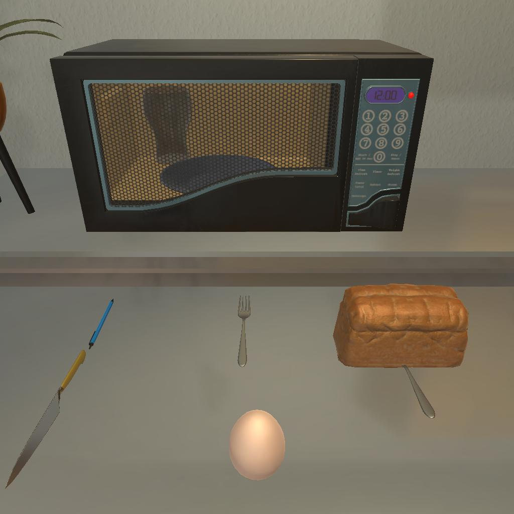

---------------------------------------------------------task: 22---------------------------------------------------------
--------------------------------------------------------------------------------------------------------------------------------------------------------------------
--------------------------------------------------------------------------------------------------------------------------------------------------------------------
Step:--------------------------------------------------------------------------10-------------------------------------------------------------------------------
----------------------------------------
VLM Prompt:
**Task**
Please perform as an embodied AI agent. Our final objective is to heat some egg and put it in countertop. Below is the plan for completing the task, the current observation, alongside historical data and admissible actions for the next step. Please determine the best action for the next step!
**Plan**
Below is a detailed step-by-step plan to complete the task.
1. Find an egg.
2. Pick up the egg.
3. Find a microwave.
4. Heat the egg with the microwave.
5. Find a countertop.
6. Place the heated egg on the countertop.
**Current Observation**
Displayed is an image capturing the current position of the agent.
Objects in The Image: ['microwave', 'knife', 'fork', 'egg', 'loaf of bread']
**History Information**
Displayed are the previous observations with their corresponding actions.
State 0:
No history.
State 1:
1. Step Index in the Plan: 1
2. Objects: Kitchen Sink, Faucet, Glass, Spoon, Lid, Copper Kettle
3. Action: go to fridge 1
State 2:
1. Step Index in the Plan: 1
2. Objects: Elevator Doors, Reflection of Lights
3. Action: open fridge 1
State 3:
1. Step Index in the Plan: 1
2. Objects: Kiwi, Loaf of Bread, Lettuce, Potato, Empty Bowl
3. Action: go to cabinet 1
State 4:
1. Step Index in the Plan: 1
2. Objects: Cabinet Doors (closed cabinet)
3. Action: open cabinet 1
State 5:
1. Step Index in the Plan: 1
2. Objects: Cabinet Doors, Wall, Ceiling
3. Action: go to cabinet 2
State 6:
1. Step Index in the Plan: 1
2. Objects: Wooden Cabinet Doors, Wall, Ceiling
3. Action: open cabinet 2
State 7:
1. Step Index in the Plan: 1
2. Objects: Wooden Cabinet, Cabinet Door
3. Action: go to cabinet 3
State 8:
1. Step Index in the Plan: (not specified)
2. Objects: Egg, Sink
3. Action: go to sinkbasin 1
State 9:
1. Step Index in the Plan: Not specified, but context implies it follows approaching the sink.
2. Objects: Egg, Eggshell, Sink
3. Action: take egg 1 from sinkbasin 1
State 10:
1. Step Index in the Plan: 3
2. Objects: Coffee Machine, Egg (previously found)
3. Action: go to microwave 1
**Admissible Actions**
(1): go to cabinet 1
(2): go to cabinet 2
(3): go to countertop 1
(4): go to cabinet 3
(5): go to cabinet 4
(6): go to cabinet 5
(7): go to sink 1
(8): go to cabinet 6
(9): go to drawer 1
(10): go to drawer 2
(11): go to cabinet 7
(12): go to cabinet 8
(13): go to coffeemachine 1
(14): go to cabinet 9
(15): go to countertop 2
(16): go to cabinet 10
(17): go to drawer 3
(18): go to drawer 4
(19): go to garbagecan 1
(20): go to drawer 5
(21): go to cabinet 11
(22): go to cabinet 12
(23): go to cabinet 13
(24): go to cabinet 14
(25): go to stoveburner 1
(26): go to countertop 3
(27): go to stoveburner 2
(28): go to stoveburner 3
(29): go to stoveburner 4
(30): go to drawer 6
(31): go to cabinet 15
(32): go to cabinet 16
(33): go to cabinet 17
(34): go to cabinet 18
(35): go to toaster 1
(36): go to drawer 7
(37): go to countertop 4
(38): go to fridge 1
(39): open microwave 1
(40): close microwave 1
(41): put egg 1 in/on microwave 1
(42): heat egg 1 with microwave 1
(43): examine egg 1
**Analysis Guideline**
1. Analyze the history and current observation, and then determine our current step in the plan and our current place.
2. List all visible objects related to the task in the current observation, without summarizing any as "various items."
3. Analyze the objects in the current observation based on the history and the requirements for the current step, and then determine if we can complete the step with the current observation.
4. Analyze and decide on the most appropriate action to take.
5. Summarize the analysis using the following format: "Analysis: [The summarization of the analysis], The Most Appropriate Action: (i which is the integer.): [Selected action]"
**Notes**
1. We must complete each step of the plan in order and cannot skip steps when the previous ones are not finished.
2. For "Go to" actions listed as "go to xxx [n]", interpret this as there are n distinct actions available: "go to xxx 1", "go to xxx 2", ..., "go to xxx n". Select one specific action from these options instead of using "go to xxx [n]".
3. If receptacles such as drawers, cabinets, and so forth are closed in the current observation, we may try to open them.
4. Pay attention to synonyms and ensure clarity in the terms used.
5. We must determine and provide the single action which must be in the **Admissible Actions**.
6. If there is no history available, we are at the first step and the current place is "Unknown".
**Answer**
Please select the most suitable action by following the **Analysis Guideline**, keeping the above **Notes** in mind.
----------------------------------------
----------------------------------------
VLM Response:
Analysis: Based on the history information, the AI agent has already found an egg (State 8) and picked it up (State 9). The agent has then moved to the microwave (State 10), which aligns with the current observation that shows the agent in front of the microwave with the egg in proximity. The current step in the plan, therefore, appears to be step 4, which is to heat the egg with the microwave. The objects visible in the current observation relevant to this task are the 'microwave' and the 'egg'. Since the plan requires heating the egg in the microwave, and both the microwave and the egg are present and accessible, we can proceed to complete the current step. The next appropriate action to take is to put the egg in the microwave, as the egg is not yet inside the microwave and this action precedes heating it.
The Most Appropriate Action: (41): put egg 1 in/on microwave 1
----------------------------------------
----------------------------------------
>>> Refine VLM Response and Get Pure Action: put egg 1 in/on microwave 1
----------------------------------------
-----------------------------------------------------------------
Running time: 8.355935096740723 seconds
Total Money: 0
-----------------------------------------------------------------
-----------------------------------------------------------------
Summarization Prompt:
**Context**
Analysis: Since there is no history information, we are at the first step in the plan, which is to find a statue. The current place is unknown. In the current observation, we see a floorlamp next to an armchair with a small table that has a small object on it, which could potentially be the statue we are looking for. Since the plan requires us to find a statue first and it appears there might be one on the table next to the armchair, we should investigate this object to determine if it is the statue we need.
The Most Appropriate Action: (1): go to armchair 1
**Summary**
1. Step Index in the Plan: 1
2. Objects: Floorlamp, Armchair, Small Table, Small Object (potential statue)
3. Action: go to armchair 1
**Context**
Analysis: Based on the history information, the AI agent has already found an egg (State 8) and picked it up (State 9). The agent has then moved to the microwave (State 10), which aligns with the current observation that shows the agent in front of the microwave with the egg in proximity. The current step in the plan, therefore, appears to be step 4, which is to heat the egg with the microwave. The objects visible in the current observation relevant to this task are the 'microwave' and the 'egg'. Since the plan requires heating the egg in the microwave, and both the microwave and the egg are present and accessible, we can proceed to complete the current step. The next appropriate action to take is to put the egg in the microwave, as the egg is not yet inside the microwave and this action precedes heating it.
The Most Appropriate Action: (41): put egg 1 in/on microwave 1
Please summarize the context by following above examples when providing the summary, and ensure that only the summary is included, without any extra explanation.
**Summary**
-----------------------------------------------------------------
-----------------------------------------------------------------
Summarization Response:
1. Step Index in the Plan: 4
2. Objects: Microwave, Egg
3. Action: put egg 1 in/on microwave 1
-----------------------------------------------------------------
-----------------------------------------------------------------
Text Observation:Nothing happens.
-----------------------------------------------------------------
UNSUCCEED